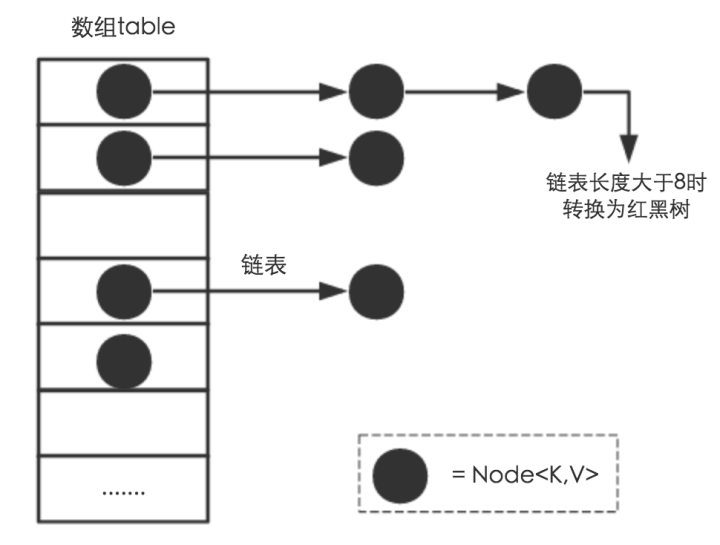

HashMap
HashMap主要由数组和链表组成，他不是线程安全的。核心的点就是put插入数据的过程，get查询数据以及扩容的方式。JDK1.7和1.8的主要区别在于头插和尾插方式的修改，头插容易导致HashMap链表死循环，并且1.8之后加入红黑树对性能有提升。

put插入数据流程
往map插入元素的时候首先通过对key hash然后与数组长度-1进行与运算((n-1)&hash)，都是2的次幂所以等同于取模，但是位运算的效率更高。找到数组中的位置之后，如果数组中没有元素直接存入，反之则判断key是否相同，key相同就覆盖，否则就会插入到链表的尾部，如果链表的长度超过8，则会转换成红黑树，最后判断数组长度是否超过默认的长度*负载因子也就是12，超过则进行扩容。
简介
Java为数据结构中的映射定义了一个接口java.util.Map，此接口主要有四个常用的实现类 ，分别是HashMap、Hashtable、LinkedHashMap和TreeMap，类继承关系如下图所示：

下面针对各个实现类的特点做一些说明：
(1) HashMap：它根据键的hashCode值存储数据，大多数情况下可以直接定位到它的值，因而具有很快的访问速度，但遍历顺序却是不确定的。 HashMap最多只允许一条记录的键为null，允许多条记录的值为null。HashMap非线程安全，即任一时刻可以有多个线程同时写HashMap，可能会导致数据的不一致。如果需要满足线程安全，可以用 Collections的synchronizedMap方法使HashMap具有线程安全的能力，或者使用ConcurrentHashMap。
(2) Hashtable：Hashtable是遗留类，很多映射的常用功能与HashMap类似，不同的是它承自Dictionary类，并且是线程安全的，任一时间只有一个线程能写Hashtable，并发性不如ConcurrentHashMap，因为ConcurrentHashMap引入了分段锁。Hashtable不建议在新代码中使用，不需要线程安全的场合可以用HashMap替换，需要线程安全的场合可以用ConcurrentHashMap替换。
(3) LinkedHashMap：LinkedHashMap是HashMap的一个子类，保存了记录的插入顺序，在用Iterator遍历LinkedHashMap时，先得到的记录肯定是先插入的，也可以在构造时带参数，按照访问次序排序。
(4) TreeMap：TreeMap实现SortedMap接口，能够把它保存的记录根据键排序，默认是按键值的升序排序，也可以指定排序的比较器，当用Iterator遍历TreeMap时，得到的记录是排过序的。如果使用排序的映射，建议使用TreeMap。在使用TreeMap时，key必须实现Comparable接口或者在构造TreeMap传入自定义的Comparator，否则会在运行时抛出java.lang.ClassCastException类型的异常。
对于上述四种Map类型的类，要求映射中的key是不可变对象。不可变对象是该对象在创建后它的哈希值不会被改变。如果对象的哈希值发生变化，Map对象很可能就定位不到映射的位置了。
通过上面的比较，我们知道了HashMap是Java的Map家族中一个普通成员，鉴于它可以满足大多数场景的使用条件，所以是使用频度最高的一个。下文我们主要结合源码，从存储结构、常用方法分析、扩容以及安全性等方面深入讲解HashMap的工作原理。
内部实现
搞清楚HashMap，首先需要知道HashMap是什么，即它的存储结构-字段；其次弄明白它能干什么，即它的功能实现-方法。下面我们针对这两个方面详细展开讲解。
存储结构-字段 从结构实现来讲，HashMap是数组+链表+红黑树（JDK1.8增加了红黑树部分）实现的，如下如所示。

这里需要讲明白两个问题：数据底层具体存储的是什么？这样的存储方式有什么优点呢？
(1) 从源码可知，HashMap类中有一个非常重要的字段，就是 Node[] table，即哈希桶数组，明显它是一个Node的数组。我们来看Node[JDK1.8]是何物。
static class Node<K,V> implements Map.Entry<K,V> {
final int hash; //用来定位数组索引位置
final K key; //链表的下一个node
V value;
Node<K,V> next;
Node(int hash, K key, V value, Node<K,V> next) {
this.hash = hash;
this.key = key;
this.value = value;
this.next = next;
}
public final K getKey() { return key; }
public final V getValue() { return value; }
public final String toString() { return key + "=" + value; }
public final int hashCode() {
return Objects.hashCode(key) ^ Objects.hashCode(value);
}
public final V setValue(V newValue) {
V oldValue = value;
value = newValue;
return oldValue;
}
public final boolean equals(Object o) {
if (o == this)
return true;
if (o instanceof Map.Entry) {
Map.Entry<?,?> e = (Map.Entry<?,?>)o;
if (Objects.equals(key, e.getKey()) &&
Objects.equals(value, e.getValue()))
return true;
}
return false;
}
}
Node是HashMap的一个内部类，实现了Map.Entry接口，本质是就是一个映射(键值对)。上图中的每个黑色圆点就是一个Node对象。
(2) HashMap就是使用哈希表来存储的。哈希表为解决冲突，可以采用开放地址法和链地址法等来解决问题，Java中HashMap采用了链地址法。 链地址法，简单来说，就是数组加链表的结合。在每个数组元素上都一个链表结构，当数据被Hash后，得到数组下标，把数据放在对应下标元素的链表上。
系统将调用"key"这个key的hashCode()方法得到其hashCode 值（该方法适用于每个Java对象），然后再通过Hash算法的后两步运算（高位运算和取模运算，下文有介绍）来定位该键值对的存储位置，有时两个key会定位到相同的位置，表示发生了Hash碰撞。当然Hash算法计算结果越分散均匀，Hash碰撞的概率就越小，map的存取效率就会越高。
如果哈希桶数组很大，即使较差的Hash算法也会比较分散，如果哈希桶数组数组很小，即使好的Hash算法也会出现较多碰撞，所以就需要在空间成本和时间成本之间权衡，其实就是在根据实际情况确定哈希桶数组的大小，并在此基础上设计好的hash算法减少Hash碰撞。那么通过什么方式来控制map使得Hash碰撞的概率又小，哈希桶数组（Node[] table）占用空间又少呢？答案就是好的Hash算法和扩容机制。
在理解Hash和扩容流程之前，我们得先了解下HashMap的几个字段。从HashMap的默认构造函数源码可知，构造函数就是对下面几个字段进行初始化，源码如下：
int threshold; // 所能容纳的key-value对极限
final float loadFactor; // 负载因子
int modCount;
int size;
首先，Node[] table的初始化长度length(默认值是16)，Load factor为负载因子(默认值是0.75)，threshold是HashMap所能容纳的最大数据量的Node(键值对)个数。threshold = length * Load factor。也就是说，在数组定义好长度之后，负载因子越大，所能容纳的键值对个数越多。
结合负载因子的定义公式可知，threshold就是在此Load factor和length(数组长度)对应下允许的最大元素数目，超过这个数目就重新resize(扩容)，扩容后的HashMap容量是之前容量的两倍。默认的负载因子0.75是对空间和时间效率的一个平衡选择，建议大家不要修改，除非在时间和空间比较特殊的情况下，如果内存空间很多而又对时间效率要求很高，可以降低负载因子Load factor的值；相反，如果内存空间紧张而对时间效率要求不高，可以增加负载因子loadFactor的值，这个值可以大于1。
size这个字段其实很好理解，就是HashMap中实际存在的键值对数量。注意和table的长度length、容纳最大键值对数量threshold的区别。而modCount字段主要用来记录HashMap内部结构发生变化的次数，主要用于迭代的快速失败。强调一点，内部结构发生变化指的是结构发生变化，例如put新键值对，但是某个key对应的value值被覆盖不属于结构变化。
在HashMap中，哈希桶数组table的长度length大小必须为2的n次方(一定是合数)，这是一种非常规的设计，常规的设计是把桶的大小设计为素数。相对来说素数导致冲突的概率要小于合数，具体证明可以参考http://blog.csdn.net/liuqiyao_01/article/details/14475159，Hashtable初始化桶大小为11，就是桶大小设计为素数的应用（Hashtable扩容后不能保证还是素数）。HashMap采用这种非常规设计，主要是为了在取模和扩容时做优化，同时为了减少冲突，HashMap定位哈希桶索引位置时，也加入了高位参与运算的过程。
这里存在一个问题，即使负载因子和Hash算法设计的再合理，也免不了会出现拉链过长的情况，一旦出现拉链过长，则会严重影响HashMap的性能。于是，在JDK1.8版本中，对数据结构做了进一步的优化，引入了红黑树。而当链表长度太长（默认超过8）时，链表就转换为红黑树，利用红黑树快速增删改查的特点提高HashMap的性能，其中会用到红黑树的插入、删除、查找等算法。本文不再对红黑树展开讨论，想了解更多红黑树数据结构的工作原理可以参考http://blog.csdn.net/v_july_v/article/details/6105630。
功能实现-方法
HashMap的内部功能实现很多，本文主要从根据key获取哈希桶数组索引位置、put方法的详细执行、扩容过程三个具有代表性的点深入展开讲解。
确定哈希桶数组索引位置
不管增加、删除、查找键值对，定位到哈希桶数组的位置都是很关键的第一步。前面说过HashMap的数据结构是数组和链表的结合，所以我们当然希望这个HashMap里面的元素位置尽量分布均匀些，尽量使得每个位置上的元素数量只有一个，那么当我们用hash算法求得这个位置的时候，马上就可以知道对应位置的元素就是我们要的，不用遍历链表，大大优化了查询的效率。 HashMap定位数组索引位置，直接决定了hash方法的离散性能。先看看源码的实现(方法一+方法二):
方法一：
static final int hash(Object key) { //jdk1.8 & jdk1.7
int h;
// h = key.hashCode() 为第一步 取hashCode值
// h ^ (h >>> 16) 为第二步 高位参与运算
return (key == null) ? 0 : (h = key.hashCode()) ^ (h >>> 16);
}
方法二：
static int indexFor(int h, int length) { //jdk1.7的源码，jdk1.8没有这个方法，但是实现原理一样的
return h & (length-1); //第三步 取模运算
}
这里的Hash算法本质上就是三步：取key的hashCode值、高位运算、取模运算。
对于任意给定的对象，只要它的hashCode()返回值相同，那么程序调用方法一所计算得到的Hash码值总是相同的。我们首先想到的就是把hash值对数组长度取模运算，这样一来，元素的分布相对来说是比较均匀的。但是，模运算的消耗还是比较大的，在HashMap中是这样做的：调用方法二来计算该对象应该保存在table数组的哪个索引处。
这个方法非常巧妙，它通过h & (table.length -1)来得到该对象的保存位，而HashMap底层数组的长度总是2的n次方，这是HashMap在速度上的优化。当length总是2的n次方时，h& (length-1)运算等价于对length取模，也就是h%length，但是&比%具有更高的效率。
在JDK1.8的实现中，优化了高位运算的算法，通过hashCode()的高16位异或低16位实现的：(h = k.hashCode()) ^ (h >>> 16)，主要是从速度、功效、质量来考虑的，这么做可以在数组table的length比较小的时候，也能保证考虑到高低Bit都参与到Hash的计算中，同时不会有太大的开销。
下面举例说明下，n为table的长度。

分析HashMap的put方法
HashMap的put方法执行过程可以通过下图来理解，自己有兴趣可以去对比源码更清楚地研究学习。

①.判断键值对数组table[i]是否为空或为null，否则执行resize()进行扩容；
②.根据键值key计算hash值得到插入的数组索引i，如果table[i]==null，直接新建节点添加，转向⑥，如果table[i]不为空，转向③；
③.判断table[i]的首个元素是否和key一样，如果相同直接覆盖value，否则转向④，这里的相同指的是hashCode以及equals；
④.判断table[i] 是否为treeNode，即table[i] 是否是红黑树，如果是红黑树，则直接在树中插入键值对，否则转向⑤；
⑤.遍历table[i]，判断链表长度是否大于8，大于8的话把链表转换为红黑树，在红黑树中执行插入操作，否则进行链表的插入操作；遍历过程中若发现key已经存在直接覆盖value即可；
⑥.插入成功后，判断实际存在的键值对数量size是否超多了最大容量threshold，如果超过，进行扩容。
JDK1.8HashMap的put方法源码如下:
public V put(K key, V value) {
// 对key的hashCode()做hash
return putVal(hash(key), key, value, false, true);
}
final V putVal(int hash, K key, V value, boolean onlyIfAbsent,
boolean evict) {
Node<K,V>[] tab; Node<K,V> p; int n, i;
// 步骤①：tab为空则创建
if ((tab = table) == null || (n = tab.length) == 0)
n = (tab = resize()).length;
// 步骤②：计算index，并对null做处理
if ((p = tab[i = (n - 1) & hash]) == null)
tab[i] = newNode(hash, key, value, null);
else {
Node<K,V> e; K k;
// 步骤③：节点key存在，直接覆盖value
if (p.hash == hash &&
((k = p.key) == key || (key != null && key.equals(k))))
e = p;
// 步骤④：判断该链为红黑树
else if (p instanceof TreeNode)
e = ((TreeNode<K,V>)p).putTreeVal(this, tab, hash, key, value);
// 步骤⑤：该链为链表
else {
for (int binCount = 0; ; ++binCount) {
if ((e = p.next) == null) {
p.next = newNode(hash, key,value,null);
//链表长度大于8转换为红黑树进行处理
if (binCount >= TREEIFY_THRESHOLD - 1) // -1 for 1st
treeifyBin(tab, hash);
break;
}
// key已经存在直接覆盖value
if (e.hash == hash &&
((k = e.key) == key || (key != null && key.equals(k)))) break;
p = e;
}
}
if (e != null) { // existing mapping for key
V oldValue = e.value;
if (!onlyIfAbsent || oldValue == null)
e.value = value;
afterNodeAccess(e);
return oldValue;
}
}
++modCount;
// 步骤⑥：超过最大容量 就扩容
if (++size > threshold)
resize();
afterNodeInsertion(evict);
return null;
}
扩容机制
扩容(resize)就是重新计算容量，向HashMap对象里不停的添加元素，而HashMap对象内部的数组无法装载更多的元素时，对象就需要扩大数组的长度，以便能装入更多的元素。当然Java里的数组是无法自动扩容的，方法是使用一个新的数组代替已有的容量小的数组，就像我们用一个小桶装水，如果想装更多的水，就得换大水桶。
我们分析下resize的源码，鉴于JDK1.8融入了红黑树，较复杂，为了便于理解我们仍然使用JDK1.7的代码，好理解一些，本质上区别不大，具体区别后文再说。
void resize(int newCapacity) { //传入新的容量
Entry[] oldTable = table; //引用扩容前的Entry数组
int oldCapacity = oldTable.length;
if (oldCapacity == MAXIMUM_CAPACITY) { //扩容前的数组大小如果已经达到最大(2^30)了
threshold = Integer.MAX_VALUE; //修改阈值为int的最大值(2^31-1)，这样以后就不会扩容了
return;
}
Entry[] newTable = new Entry[newCapacity]; //初始化一个新的Entry数组
transfer(newTable); //！！将数据转移到新的Entry数组里
table = newTable; //HashMap的table属性引用新的Entry数组
threshold = (int)(newCapacity * loadFactor);//修改阈值
}
这里就是使用一个容量更大的数组来代替已有的容量小的数组，transfer()方法将原有Entry数组的元素拷贝到新的Entry数组里。
void transfer(Entry[] newTable) {
Entry[] src = table; //src引用了旧的Entry数组
int newCapacity = newTable.length;
for (int j = 0; j < src.length; j++) { //遍历旧的Entry数组
Entry<K,V> e = src[j]; //取得旧Entry数组的每个元素
if (e != null) {
src[j] = null;//释放旧Entry数组的对象引用（for循环后，旧的Entry数组不再引用任何对象）
do {
Entry<K,V> next = e.next;
int i = indexFor(e.hash, newCapacity); //！！重新计算每个元素在数组中的位置
e.next = newTable[i]; //标记[1]
newTable[i] = e; //将元素放在数组上
e = next; //访问下一个Entry链上的元素
} while (e != null);
}
}
}
newTable[i]的引用赋给了e.next，也就是使用了单链表的头插入方式，同一位置上新元素总会被放在链表的头部位置；这样先放在一个索引上的元素终会被放到Entry链的尾部(如果发生了hash冲突的话），这一点和Jdk1.8有区别，下文详解。在旧数组中同一条Entry链上的元素，通过重新计算索引位置后，有可能被放到了新数组的不同位置上。
下面举个例子说明下扩容过程。假设了我们的hash算法就是简单的用key mod 一下表的大小（也就是数组的长度）。其中的哈希桶数组table的size=2， 所以key = 3、7、5，put顺序依次为 5、7、3。在mod 2以后都冲突在table[1]这里了。这里假设负载因子 loadFactor=1，即当键值对的实际大小size 大于 table的实际大小时进行扩容。接下来的三个步骤是哈希桶数组 resize成4，然后所有的Node重新rehash的过程。
下面我们讲解下JDK1.8做了哪些优化。经过观测可以发现，我们使用的是2次幂的扩展(指长度扩为原来2倍)，所以，元素的位置要么是在原位置， 要么是在原位置再移动2次幂的位置。看下图可以明白这句话的意思，n为table的长度，图（a）表示扩容前的key1和key2两种key确定索引位置的示例，图（b）表示扩容后key1和key2两种key确定索引位置的示例，其中hash1是key1对应的哈希与高位运算结果。

元素在重新计算hash之后，因为n变为2倍，那么n-1的mask范围在高位多1bit(红色)，因此新的index就会发生这样的变化：

因此，我们在扩充HashMap的时候，不需要像JDK1.7的实现那样重新计算hash，只需要看看原来的hash值新增的那个bit是1还是0就好了，是0的话索引没变，是1的话索引变成“原索引+oldCap”，可以看看下图为16扩充为32的resize示意图：
这个设计确实非常的巧妙，既省去了重新计算hash值的时间，而且同时，由于新增的1bit是0还是1可以认为是随机的，因此resize的过程，均匀的把之前的冲突的节点分散到新的bucket了。这一块就是JDK1.8新增的优化点。有一点注意区别，JDK1.7中rehash的时候，旧链表迁移新链表的时候，如果在新表的数组索引位置相同，则链表元素会倒置，但是从上图可以看出，JDK1.8不会倒置。有兴趣的同学可以研究下JDK1.8的resize源码，写的很赞，如下:
final Node<K,V>[] resize() {
Node<K,V>[] oldTab = table;
int oldCap = (oldTab == null) ? 0 : oldTab.length;
int oldThr = threshold;
int newCap, newThr = 0;
if (oldCap > 0) {
// 超过最大值就不再扩充了，就只好随你碰撞去吧
if (oldCap >= MAXIMUM_CAPACITY) {
threshold = Integer.MAX_VALUE;
return oldTab;
}
// 没超过最大值，就扩充为原来的2倍
else if ((newCap = oldCap << 1) < MAXIMUM_CAPACITY &&
oldCap >= DEFAULT_INITIAL_CAPACITY)
newThr = oldThr << 1; // double threshold
}
else if (oldThr > 0) // initial capacity was placed in threshold
newCap = oldThr;
else { // zero initial threshold signifies using defaults
newCap = DEFAULT_INITIAL_CAPACITY;
newThr = (int)(DEFAULT_LOAD_FACTOR * DEFAULT_INITIAL_CAPACITY);
}
// 计算新的resize上限
if (newThr == 0) {
float ft = (float)newCap * loadFactor;
newThr = (newCap < MAXIMUM_CAPACITY && ft < (float)MAXIMUM_CAPACITY ?
(int)ft : Integer.MAX_VALUE);
}
threshold = newThr;
@SuppressWarnings({"rawtypes"，"unchecked"})
Node<K,V>[] newTab = (Node<K,V>[])new Node[newCap];
table = newTab;
if (oldTab != null) {
// 把每个bucket都移动到新的buckets中
for (int j = 0; j < oldCap; ++j) {
Node<K,V> e;
if ((e = oldTab[j]) != null) {
oldTab[j] = null;
if (e.next == null)
newTab[e.hash & (newCap - 1)] = e;
else if (e instanceof TreeNode)
((TreeNode<K,V>)e).split(this, newTab, j, oldCap);
else { // 链表优化重hash的代码块
Node<K,V> loHead = null, loTail = null;
Node<K,V> hiHead = null, hiTail = null;
Node<K,V> next;
do {
next = e.next;
// 原索引
if ((e.hash & oldCap) == 0) {
if (loTail == null)
loHead = e;
else
loTail.next = e;
loTail = e;
}
// 原索引+oldCap
else {
if (hiTail == null)
hiHead = e;
else
hiTail.next = e;
hiTail = e;
}
} while ((e = next) != null);
// 原索引放到bucket里
if (loTail != null) {
loTail.next = null;
newTab[j] = loHead;
}
// 原索引+oldCap放到bucket里
if (hiTail != null) {
hiTail.next = null;
newTab[j + oldCap] = hiHead;
}
}
}
}
}
return newTab;
}
线程安全性
在多线程使用场景中，应该尽量避免使用线程不安全的HashMap，而使用线程安全的ConcurrentHashMap。那么为什么说HashMap是线程不安全的，下面举例子说明在并发的多线程使用场景中使用HashMap可能造成死循环。代码例子如下(便于理解，仍然使用JDK1.7的环境)：
public class HashMapInfiniteLoop {
private static HashMap<Integer,String> map = new HashMap<Integer,String>(2，0.75f);
public static void main(String[] args) {
map.put(5， "C");
new Thread("Thread1") {
public void run() {
map.put(7, "B");
System.out.println(map);
};
}.start();
new Thread("Thread2") {
public void run() {
map.put(3, "A);
System.out.println(map);
};
}.start();
}
}
其中，map初始化为一个长度为2的数组，loadFactor=0.75，threshold=2*0.75=1，也就是说当put第二个key的时候，map就需要进行resize。
通过设置断点让线程1和线程2同时debug到transfer方法(3.3小节代码块)的首行。注意此时两个线程已经成功添加数据。放开thread1的断点至transfer方法的“Entry next = e.next;” 这一行；然后放开线程2的的断点，让线程2进行resize。结果如下图。
注意，Thread1的 e 指向了key(3)，而next指向了key(7)，其在线程二rehash后，指向了线程二重组后的链表。
线程一被调度回来执行，先是执行 newTalbe[i] = e， 然后是e = next，导致了e指向了key(7)，而下一次循环的next = e.next导致了next指向了key(3)。
e.next = newTable[i] 导致 key(3).next 指向了 key(7)。注意：此时的key(7).next 已经指向了key(3)， 环形链表就这样出现了。

于是，当我们用线程一调用map.get(11)时，悲剧就出现了——Infinite Loop。
HashMap的keySet()和values()
我们通常说，keySet()返回所有的键，values()返回所有的值，其实是不太对的，因为无论是keySet()和values()，其实都没有实质的内容，且容我慢慢说来。
他们前者返回了一个Set，后者返回了一个Collection，但是Set和Collection都只是接口，既然是接口，那就大有文章可以做。很重要的一点就是，接口可以不是new someClass()的来的，也就是说，它可以不对应与一个类，而只提供一些方法。实际上，HashMap中所有的数据都是放在一个Node
不信？我们可以看源码。
首先来看values方法：
public Collection<V> values() {
Collection<V> vs = values;
if (vs == null) {
vs = new Values();
values = vs;
}
return vs;
}
可以看到values其实是返回了一个Values类的，这是个内部类，就在它后面：
final class Values extends AbstractCollection<V> {
public final int size() { return size; }
public final void clear() { HashMap.this.clear(); }
public final Iterator<V> iterator() { return new ValueIterator(); }
public final boolean contains(Object o) { return containsValue(o); }
public final Spliterator<V> spliterator() {
return new ValueSpliterator<>(HashMap.this, 0, -1, 0, 0);
}
public final void forEach(Consumer<? super V> action) {
Node<K,V>[] tab;
if (action == null)
throw new NullPointerException();
if (size > 0 && (tab = table) != null) {
int mc = modCount;
for (int i = 0; i < tab.length; ++i) {
for (Node<K,V> e = tab[i]; e != null; e = e.next)
action.accept(e.value);
}
if (modCount != mc)
throw new ConcurrentModificationException();
}
}
}
看到没有，完全没有提供新数据，完全是操作那个table，或者调用hashMap自己的方法。我之前傻呵呵的找源码是怎么为values（HashMap除了有values这个方法，还有一个属性也叫values，坑爹不？）赋值的，现在才知道自己是这么傻，因为根本就没有复制嘛。
再来看keySet，也是一样的思路：
public Set<K> keySet() {
Set<K> ks = keySet;
if (ks == null) {
ks = new KeySet();
keySet = ks;
}
return ks;
}
final class KeySet extends AbstractSet<K> {
public final int size() { return size; }
public final void clear() { HashMap.this.clear(); }
public final Iterator<K> iterator() { return new KeyIterator(); }
public final boolean contains(Object o) { return containsKey(o); }
public final boolean remove(Object key) {
return removeNode(hash(key), key, null, false, true) != null;
}
public final Spliterator<K> spliterator() {
return new KeySpliterator<>(HashMap.this, 0, -1, 0, 0);
}
public final void forEach(Consumer<? super K> action) {
Node<K,V>[] tab;
if (action == null)
throw new NullPointerException();
if (size > 0 && (tab = table) != null) {
int mc = modCount;
for (int i = 0; i < tab.length; ++i) {
for (Node<K,V> e = tab[i]; e != null; e = e.next)
action.accept(e.key);
}
if (modCount != mc)
throw new ConcurrentModificationException();
}
}
}